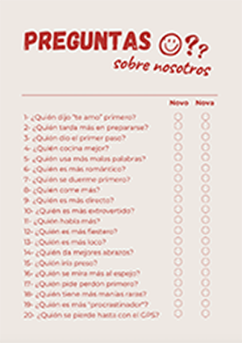
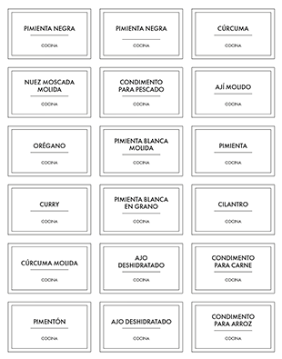

Mi currículum
Estudiante de diseño y comunicación visual
Un poco sobre mi
¿Quién soy?
Mi nombre es Olivia Harrison. Soy estudiante de la Licenciatura en Diseño y comunicación visual, y me
encuentro cursando la materia Computación 3. Me defino como una persona creativa, curiosa y comprometida
con cada proyecto, y me gusta transformar ideas en piezas con sentido. Me motiva aprender, experimentar
y trabajar en equipo, buscando siempre que el diseño genere una conexión real con las personas.
Datos académicos
Estudié medio año de la carrera Escenografía en la Universidad Nacional de las Artes desde marzo hasta
junio
del año 2022. Luego hice un curso de dibujo y pintura en la Universidad Nacional de Lanús en noviembre
del
año 2022. Actualmente me encuentro haciendo la Licenciatura en Diseño y comunicación visual, también en
la
Universidad Nacional de Lanús. LLevo el 48,9% de la carrera hecha, habiendo completado 18 materias.
Experiencia laboral
Manejo de redes sociales
Emprendimiento de viandas saludables | @Marchelosano
Mi primera experiencia fue el manejo de redes sociales para un emprendimiento de viandas
saludables.
Me
encargué de llevar a cabo el diseño de las publicaciones, el manejo de las historias y el feed y
la
creación
de contenido.
Negocio de indumentaria masculina | Burzaco
También me encargué del manejo de las redes sociales de un negocio de indumentaria masculina. Mi
tarea era
tomar fotos y hacer contenido con los productos y armar y subir las historias, publicaciones y
reels.
Agente comercial
Negocio de indumentaria masculina | Burzaco
Estuve en un negocio de indumentaria masculina como auxiliar de comercial y en atención al
cliente
(atendiendo gente). Esto lo hice solo en Diciembre, para la fecha de las fiestas, y por 3 años.
Mis objetivos
Uno de mis objetivos es viajar y conocer distintos países. Me gustaría conseguir un trabajo del exterior
una
vez recibida, para así poder adquirir experiencia, aprender mucho y poder ahorrar. También me gustaría
crecer en el diseño, para poder combinarlo con cosas que me gusten, como por ejemplo la ropa y la moda.
Otros proyectos
Revista de parejas
Llevé a cabo la producción completa (diseño, impresión y armado) de una revista para mi pareja.
Contaba con
distintas temáticas en cada página: fotos, cupones, cuestionario, etc.

Etiquetas para especias
Diseñé un pack de etiquetas para especias en base a un modelo pedido por un conocido. En base a este
pequeño
proyecto, mi idea es producir diferentes packs con distintas temáticas, estilos, etc.

Habilidades:
- Buena comunicación
- Buen trabajo en equipo
- Dominio del paquete Adobe
- Nivel alto en el inglés
- Resolución de problemas
"El diseño gráfico no es lo que ves, sino lo que debes hacer que otras personas vean."